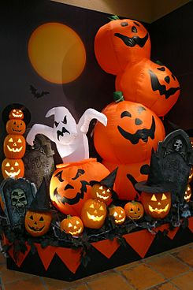
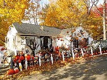
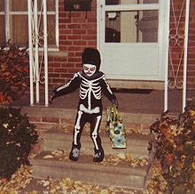

¿Qué es?

Halloween o Hallowe'en (contracción de All Hallows 'evening;
literalmente en español, «víspera de Todos los Santos»),también
conocido como Víspera de Todos los Santos, Noche de los Muertos,
Noche de Brujas o Allhalloween, es una celebración internacional que
se celebra el 31 de octubre, víspera de la fiesta cristiana
occidental del Día de Todos los Santos. Coincide con el primero de
los tres días que componen Allhallowtide, el tiempo del año
litúrgico dedicado a recordar a los muertos, incluidos los santos (a
través de sus reliquias), mártires y todos los fieles difuntos
Etimología
La palabra Halloween o Hallowe'en data aproximadamente de 1745 La
palabra "Hallowe'en" significa "Noche de los Santos". Proviene de un
término escocés para la víspera de Todos los Santos (la noche
anterior al Día de Todos los Santos). En escocés, la palabra "eve"
es "even", y se contrae como e'en o een. Con el tiempo, (All)
Hallow(s) E(v)en evolucionó a Hallowe'en. Aunque la frase "All
Hallows" se encuentra en inglés antiguo, "All Hallows' Eve" no se ve
en sí misma hasta 1556.
Historia

La palabra Halloween o Hallowe'en data aproximadamente de 1745 La
palabra "Hallowe'en" significa "Noche de los Santos". Proviene de un
término escocés para la víspera de Todos los Santos (la noche
anterior al Día de Todos los Santos). En escocés, la palabra "eve"
es "even", y se contrae como e'en o een. Con el tiempo, (All)
Hallow(s) E(v)en evolucionó a Hallowe'en. Aunque la frase "All
Hallows" se encuentra en inglés antiguo, "All Hallows' Eve" no se ve
en sí misma hasta 1556.
Actualidad


Hoy en día, Halloween es una de las fechas más importantes del
calendario festivo estadounidense y canadiense. Algunos países
iberoamericanos, conociendo aún esta festividad, tienen sus propias
tradiciones y celebraciones ese mismo día, aunque coinciden en
cuanto a su significado: la unión o extrema cercanía del mundo de
los vivos y el reino de los muertos.